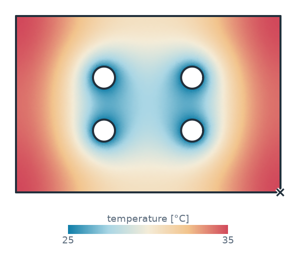
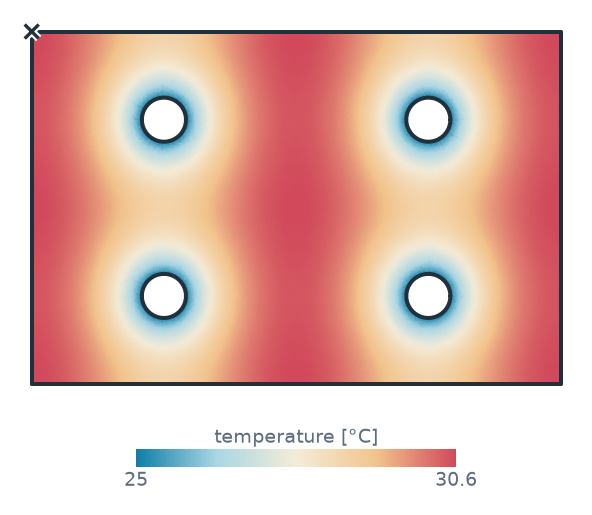
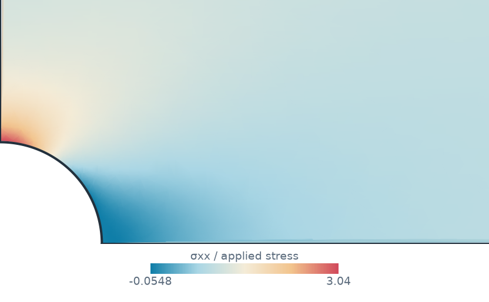
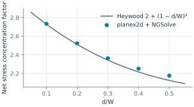
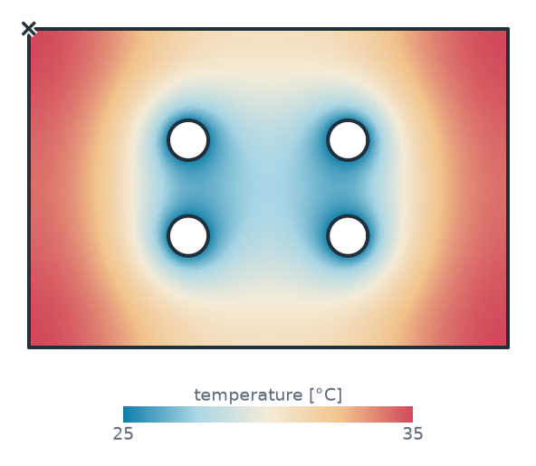

Field solvers as measurements
A planex2d measurement is a function of the part, so it can pass the part to netgen for a mesh and to NGSolve, FEniCSx or any other solver for a partial differential equation. Its result is a number like any other. Stored on a constraint sketch, it follows every Update, it can be swept or optimized with SciPy, and with plot=True it returns the solution at sample points, so the field can be drawn as a planex2d map. This page writes two such measurements around NGSolve,
the peak temperature of a cold plate and the stress concentration at a hole, checks both against closed forms, and then writes the first one again with FEniCSx. Sizes are in millimeters.
[1]:
import math
import ngsolve as ngs
import planex as px
import planex.measurements as pm
The pattern
pm.TorsionConstant() is already such a measurement. It has netgen mesh the cross-section and NGSolve solve Laplace’s equation for the warping function, and it integrates the torsion constant J from the result, in about 25 lines of Python. For a rectangle a × b, J has an exact series. The example is a section of a = 40 by b = 20:
[3]:
a, b = 40, 20
section = px.QuickSketch().RectangleC(a, b).Face()
J = section.Measure(pm.TorsionConstant())
terms = sum(math.tanh(n * math.pi * a / (2 * b)) / n**5 for n in range(1, 200, 2))
series = a * b**3 / 3 * (1 - 192 / math.pi**5 * b / a * terms)
print("J", J, "series", series, "relative difference", J / series - 1)
J 73178.18297599265 series 73178.13668087665 relative difference 6.326358950037303e-07
The measurements below follow the same four steps:
Take the face (a measurement stored on a sketch is called with the sketch).
Pass it to netgen with
px.OCCGeometry(part), where the names of the edges become the names of the boundaries.Let NGSolve solve (a hidden function on this page).
Reduce the solution to a number and, for
plot=True, also return it at sample points.
The peak temperature of a cold plate
A cold plate carries electronics that put a uniform heat flux q into it. The coolant in its channels holds the channel walls at the coolant’s temperature, and the outer edges are insulated. In the plane of a plate of thickness t and conductivity k, the temperature solves −k t ΔT = q. PeakTemperature has NGSolve solve this and returns the hottest value of the solution, taken over the quadrature points and the vertices of the mesh. For plot=True, it returns all of them, with fewer
quadrature points. The defaults are 2 W/cm² on 10 mm of aluminum, in W, mm and °C.
[4]:
def PeakTemperature(q=0.02, k=0.2, t=10.0, coolant=25.0, cooled="channel",
maxh=4.0, order=3):
def peak(obj, plot=False, **_):
part = obj.Face() if isinstance(obj, px.Sketch) else obj
mesh = ngs.Mesh(px.OCCGeometry(part).GenerateMesh(maxh=maxh))
mesh.Curve(order)
temperature = SolveTemperature(mesh, q, k, t, coolant, cooled, order)
rule = ngs.IntegrationRule(ngs.TRIG, 4 if plot else 2 * order + 2)
at = mesh.MapToAllElements(rule, ngs.VOL)
corners = [vertex.point for vertex in mesh.vertices]
points = list(zip(ngs.x(at).flatten(), ngs.y(at).flatten())) + corners
values = list(temperature(at).flatten())
values += [temperature(mesh(*p)) for p in corners]
hot = max(range(len(values)), key=values.__getitem__)
if not plot:
return values[hot]
return {"points": points, "values": values, "value": values[hot],
"label": "temperature [°C]", "marks": [(points[hot], "hot")]}
return peak
As a check against a closed form, a disc of radius R, cooled at its rim, peaks in its center at q R² / (4 k t) above the coolant.
[5]:
R = 40.0
disc = px.QuickSketch().Circle(0, 0, R, name="channel").Face()
exact = 25.0 + 0.02 * R**2 / (4 * 0.2 * 10.0)
peak = disc.Measure(PeakTemperature())
print("disc: peak", peak, "°C, exact", exact, "°C")
disc: peak 28.999435840310877 °C, exact 29.0 °C
The cold plate from part analysis measures 120 × 80 and has four channels of diameter 10, one drawn at (a, b) and mirrored about both axes in the sketch. Stored on the sketch, the peak temperature follows every Update. At the first guess, the corners run hottest (Figure 1a). At a = 30 and b = 20, a quarter of the width and of the height, where the distance proxy of the analysis page put the channels, the plate falls into four identical cells with a
channel in the middle of each, and the peak drops by 4.5 °C (Figure 1b). Under a uniform load the proxy found the right layout. The SciPy page optimizes a plate with real components on it, where the heat no longer spreads evenly.
[6]:
cp = px.Sketch(id="cold plate")
cp.Move((-60, -40), px.Fix).Rectangle(120, 80, id="outline")
cp.Constrain("outline.Line.1", px.Horizontal)
cp.Constrain("outline.Line.1", px.Distance, 120, id="width")
cp.Constrain("outline.Line.2", px.Distance, 80, id="height")
cp.Circle(20, 12, 5, id="channel", name="channel")
cp.Constrain("channel", px.Diameter, 10, id="d")
cp.Constrain("channel.center", px.V, px.Distance, 20, id="a")
cp.Constrain("channel.center", px.H, px.Distance, 12, id="b")
cp.Mirrored(["channel"], px.V)
cp.Mirrored(["channel", "Mirrored.1.channel"], px.H)
cp.Measure(PeakTemperature(), id="peak")
for a, b in ((20, 12), (30, 20)):
print("a", a, "b", b, "peak", round(cp.Update({"a": a, "b": b}).measures["peak"], 3), "°C")
a 20 b 12 peak 35.015 °C
a 30 b 20 peak 30.552 °C

(a) The first guess

(b) a = 30, b = 20: four equal cells
The stress concentration at a hole
In a plate in tension with a hole in its middle, the stress at the edge of the hole peaks at several times the applied stress. StressConcentration solves plane-stress linear elasticity on a quarter of the plate, with the symmetry edges symx and symy and the unit applied stress on the edge load, and returns the peak stress σxx on the edges named hole, taken over their quadrature points and their ends: the gross stress concentration factor. For plot=True it returns σxx in
the whole plate.
[8]:
def plate(d, W=50.0, L=200.0):
r = d / 2
s = px.QuickSketch((r, 0)).Line((L / 2, 0), name="symy").Line((L / 2, W / 2), name="load")
s.Line((0, W / 2)).Line((0, r), name="symx")
return s.Arc(center=(0, 0), sweep=-90, name="hole", maxh=r / 8).Face()
def StressConcentration(E=70e3, nu=0.33, order=3, hole="hole"):
def peak(part, plot=False, **_):
(x0, y0), (x1, y1) = part.bounding_box
mesh = ngs.Mesh(px.OCCGeometry(part).GenerateMesh(maxh=(y1 - y0) / 8))
mesh.Curve(order)
sxx = SolveStress(mesh, E, nu, order)
rule = ngs.IntegrationRule(ngs.SEGM, 2 * order + 2)
edge = mesh.MapToAllElements(rule, mesh.Boundaries(hole))
ends = [(p.x, p.y) for e in part.edges(name=hole) for p in (e.start, e.end)]
values = list(ngs.BoundaryFromVolumeCF(sxx)(edge).flatten())
values += [sxx(mesh(*p)) for p in ends]
if not plot:
return max(values)
at = mesh.MapToAllElements(ngs.IntegrationRule(ngs.TRIG, 4), ngs.VOL)
points = list(zip(ngs.x(at).flatten(), ngs.y(at).flatten()))
return {"points": points, "values": list(sxx(at).flatten()),
"value": max(values), "label": "σxx / applied stress"}
return peak
Kirsch’s solution for a small hole in a wide plate gives exactly 3, at the top of the hole:
[9]:
small = plate(2.0, W=200.0, L=800.0)
K = small.Measure(StressConcentration())
print("hole 2 in a plate 200 wide:", round(K, 5), "Kirsch 3")
hole 2 in a plate 200 wide: 3.00017 Kirsch 3
For larger holes, Heywood’s empirical formula K = 2 + (1 − d/W)³ refers the peak to the stress in the net section, which is W/(W − d) times the applied one. The example is a plate 50 wide with holes of a tenth to a half of the width. The finite elements agree with Heywood within 2.5 %, most closely for small holes (Figure 3). The map shows σxx around a hole of a fifth of the width: 3.15 times the applied stress at its top, and almost none beside it, in the hole’s shadow along the load (Figure 2).
[10]:
ratios = [0.1, 0.2, 0.3, 0.4, 0.5]
net = [plate(ratio * 50).Measure(StressConcentration()) * (1 - ratio) for ratio in ratios]
heywood = [2 + (1 - ratio) ** 3 for ratio in ratios]
print("finite elements", [round(n, 3) for n in net])
print("Heywood ", [round(h, 3) for h in heywood])
print("largest difference", round(100 * max(n / h - 1 for n, h in zip(net, heywood)), 1), "%")
finite elements [2.734, 2.523, 2.363, 2.251, 2.176]
Heywood [2.729, 2.512, 2.343, 2.216, 2.125]
largest difference 2.4 %


The airplane windows example goes on from here to oval and square windows under the two-way load of a pressurized fuselage.
The same measurement with FEniCSx
Nothing in a measurement ties it to one solver. PeakTemperatureFX solves the cold plate’s problem with FEniCSx: WriteGeo writes the face for gmsh with the edge names as physical groups, gmsh meshes it in the same process with second-order triangles, which follow the channels’ circles, and dolfinx reads the model with its groups, so the coolant is again the boundary "channel". The hottest value is taken over the degrees of freedom of the solution; for plot=True, they are the
sample points. See gmsh and FEniCSx for the route from planex2d to dolfinx step by step.
[12]:
import os
import tempfile
import gmsh
import numpy as np
import ufl
import dolfinx
from dolfinx import fem
from dolfinx.fem.petsc import LinearProblem
from dolfinx.io import gmsh as gmshio
from mpi4py import MPI
def dolfinx_mesh(part, h, order=2):
geo = os.path.join(tempfile.mkdtemp(), "part.geo")
part.WriteGeo(geo)
gmsh.initialize()
gmsh.option.setNumber("General.Terminal", 0)
gmsh.open(geo)
gmsh.option.setNumber("Mesh.MeshSizeMax", h)
gmsh.model.mesh.generate(2)
gmsh.model.mesh.setOrder(order)
data = gmshio.model_to_mesh(gmsh.model, MPI.COMM_WORLD, 0, gdim=2)
gmsh.finalize()
return data
def PeakTemperatureFX(q=0.02, k=0.2, t=10.0, coolant=25.0, cooled="channel",
maxh=4.0, order=3):
def peak(obj, plot=False, **_):
part = obj.Face() if isinstance(obj, px.Sketch) else obj
data = dolfinx_mesh(part, maxh)
V = fem.functionspace(data.mesh, ("Lagrange", order))
facets = data.facet_tags.find(data.physical_groups[cooled].tag)
dofs = fem.locate_dofs_topological(V, 1, facets)
bc = fem.dirichletbc(dolfinx.default_scalar_type(coolant), dofs, V)
T, v = ufl.TrialFunction(V), ufl.TestFunction(V)
a = k * t * ufl.inner(ufl.grad(T), ufl.grad(v)) * ufl.dx
f = fem.Constant(data.mesh, dolfinx.default_scalar_type(q)) * v * ufl.dx
lu = {"ksp_type": "preonly", "pc_type": "lu"}
problem = LinearProblem(a, f, bcs=[bc], petsc_options_prefix="peak_",
petsc_options=lu)
values = problem.solve().x.array.real
points = [tuple(p) for p in V.tabulate_dof_coordinates()[:, :2]]
hot = int(np.argmax(values))
if not plot:
return float(values[hot])
return {"points": points, "values": list(values),
"value": float(values[hot]), "label": "temperature [°C]",
"marks": [(points[hot], "hot")]}
return peak
The disc check again, and both measurements stored on the cold plate’s sketch, where they follow every Update together. They are two discretizations of the same problem: NGSolve on netgen’s mesh curved to order 3, its peak taken over quadrature points and vertices, FEniCSx on gmsh’s second-order mesh, its peak taken over the degrees of freedom. So they agree to the discretization error, not to rounding. The plate is symmetric, so its hottest value sits in all four corners at once, and each
solver marks the corner where its mesh happens to come out highest (Figure 4).
[13]:
value = disc.Measure(PeakTemperatureFX())
print("disc: FEniCSx", value, "°C, exact", exact, "°C")
cp.Measure(PeakTemperatureFX(), id="peak FEniCSx")
for a, b in ((20, 12), (30, 20)):
m = cp.Update({"a": a, "b": b}).measures
print("a", a, "b", b, "NGSolve", round(m["peak"], 4), "°C, FEniCSx", round(m["peak FEniCSx"], 4), "°C")
disc: FEniCSx 28.998822689121436 °C, exact 29.0 °C
a 20 b 12 NGSolve 35.0152 °C, FEniCSx 35.0171 °C
a 30 b 20 NGSolve 30.5525 °C, FEniCSx 30.5541 °C
(a) NGSolve

(b) FEniCSx
More
The same measurements drive design. The SciPy page optimizes the cold plate’s channels for the peak temperature, and part analysis shows the measurement system with checks that need no solver.